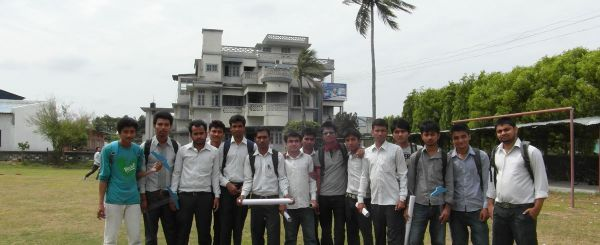

-

-

-

At Eastern College of Engineering we envision our institute as the fountain head of excellence in engineering knowledge to result in engineers instilled with a sense of commitment, responsibility & belongingness both in their professorial & personnel lives.
Why Choose EASCOLL ?
Computer Laboratory
Modern Scientific Laboratory
Education & Sports
Library
Digital Library
Club of Robotics
Experienced Faculties
Located in the City
Academic Programs
1. Bachelor of Engineering in Computers
The main objective of the department is to provide excellence in recent trends in computer science & engineering. This course will prepare the students to learn, and construct the programs in various language viz. C, C++, Java. Besides various electives like Fault Tolerant Computing, GIS, Embedded system on list the students are put through live project works through modern computing network.
The necessary technological advancement in modern computing world will also be incorporated from time to time to prepare the students with the challenges of new millennium.
2. Bachelor of Engineering in Civils
In a developing country like Nepal Civil Engineering can bring about a revolution in uplifting the living standard of the people by providing basic and modern amenities & infrastructure for development. This course provides the students to learn, design and maintain the urban & rural, construction with specialization in CAD. The faculties take keen interest in industry interaction & research work in order to provide the most modern knowledge in the related field. The students enjoy working on real life projects.
3. Bachelor of Engineering in Electronics & Communication
The course intends to introduce the students to the world of Electronics & Communication Engineering. This course will also provide the students the requirements of the modern digital communication network which will be required to design, develop and maintain various electronic systems to learn the principles of modern digital devices and their applications. The faculty members are regularly invited by reputed industries and organizations for corporate training, seminar etc.
Address
Bhupalgram, Biratnagar-2, Koshi, Morang, Nepal